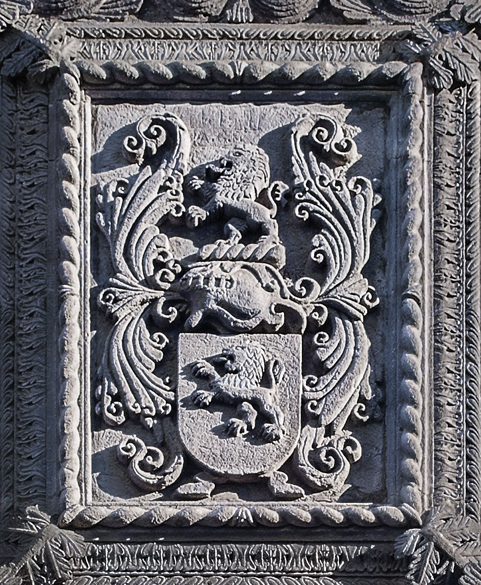

Origin and Meaning of the Bittencourt Surname
© Paulo Bittencourt
Coat of arms of the family, on the facade of the Palácio Bettencourt, in Angra do Heroísmo, Azores.
How many tees does it take to make a Bittencourt?
Of all his brothers and sisters, my father was the only one to be registered with a spelling error, reason why, on my birth certificate, my last name has only one tee in the middle: Bitencourt. On the internet, I write it with two to match the original spelling of the family. But is Bittencourt with two tees in the middle really the original spelling of this surname?
Many Bittencourts are proud of their double-tee, saying it’s the correct spelling, since it’s the original one, of this family name. They must think that the double-tee lend it an air of nobility. I’m sorry to destroy their little sandcastle, but Bittencourt is a very old surname. Like almost all family names that are very old, its exact origin is unknown, which makes it impossible to establish its original and, therefore, correct spelling. In addition, it has undergone many changes. The oldest mention, which is from the 13th century, is Béthencourt. As one can see, no double-tee. Bittencourt with an i and double-tee is just the most common form in Brazil. In other countries, this surname is spelled differently. The most famous variation is Betancourt, because of the internationally reported kidnapping, in 2002, of then Colombian senator Íngrid Betancourt.

Agustín de Betancourt (Бетанкур), in Saint Petersburg, Spanish engineer responsible for much of Russia’s development.
Some foreign family names have an obvious meaning, such as the German Weingarten. Wein = wine; Garten = garden, but also vegetable garden and orchard. In other words, vineyard. The meaning of Bittencourt, which is a French surname, is not obvious. From what I, after much research, was able to discover, it’s possible that Bitten comes from beet and court, from courtyard, in this case a courtyard in which this vegetable is grown, making Bittencourt mean beet garden.
Paulo Beethoven
If it really means beet garden, Bittencourt and Beethoven are the same family name: the former in French; the latter, in Dutch. The parents of the disheveled German composer were from Belgium, where three languages are spoken: French, German and Dutch. In the Dutch region, there is a village called Bettenhoven, whose bilingual sign reads, in French, — da, da, da, daaaaa… — Bettincourt! Quite a coincidence, isn’t it? There are those who claim that the surname Beethoven comes from that locality.
Dutch and German are very similar languages, and, since I speak German fluently, I can confirm that, like Bittencourt, Beethoven indeed can mean beet garden. The first part, Beet, is the old spelling of biet, which, in Dutch, is the English beet. The second part, Hoven, is the plural of hof, which is courtyard, but also farm and garden. In Dutch, Garden of Eden even is Hof van Eden. Hof comes from the Latin hortus (both words even begin with ho), which is vegetable garden.
I bet you feel now like listening to a Bittencourt, pardon, Beethoven symphony. Let’s not beat around the bush: nothing beats listening to Beethoven’s beats while munching on a beet. Try to do that without going beet red.
PT • DE • Your opinion